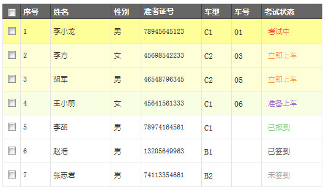

实现原理
- 准备工作
-
- 根据不同的条件显示不同的背景色
-
- 新建动态面板并命名为：行SelectedColor，放在行（组合）下面，将其状态设置为隐藏；
- 建几个面板状态，为每个面板状态设置一个背景颜色；
- 作用为：当根据不同的条件需要显示不同的背景色时，只需要设置成此动态面板相应的面板状态即可；
- 悬停效果
-
- 新建动态面板并命名为：行HoverColor，放在 行SelectedColor（动态面板）下面，将其状态设置为隐藏；
- 为此动态面板的面板状态设置一个背景颜色；
- 鼠标移入 行（组合）时：显示 行HoverColor
- 鼠标移出 行（组合）时：隐藏 行HoverColor
